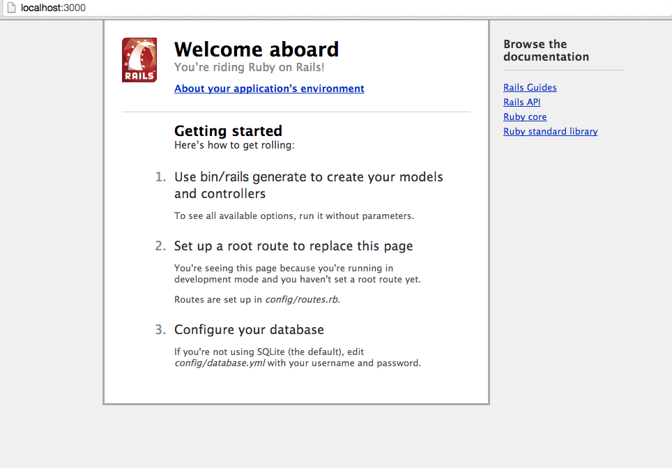
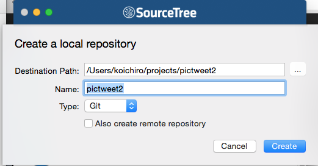
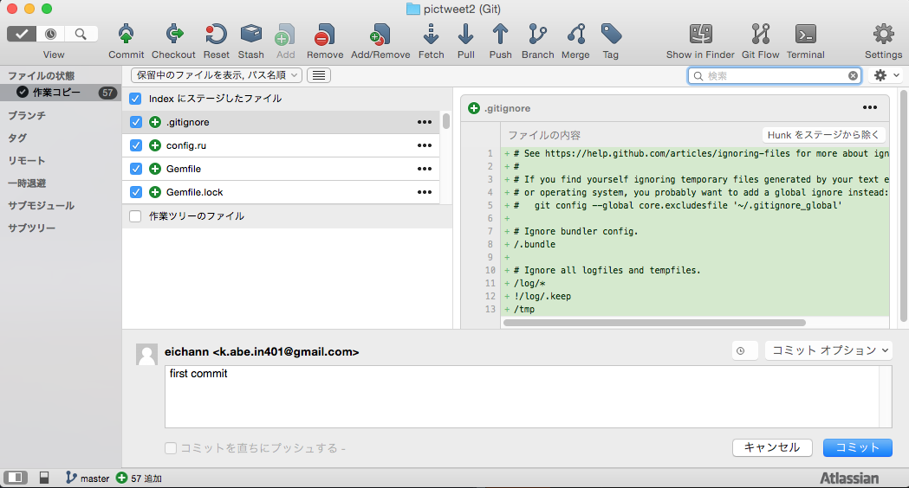
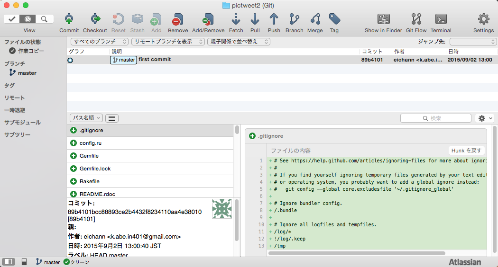
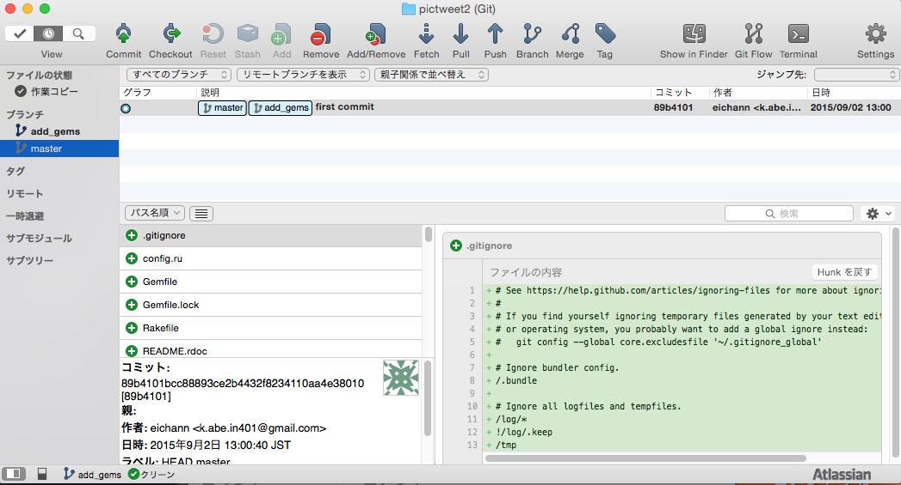
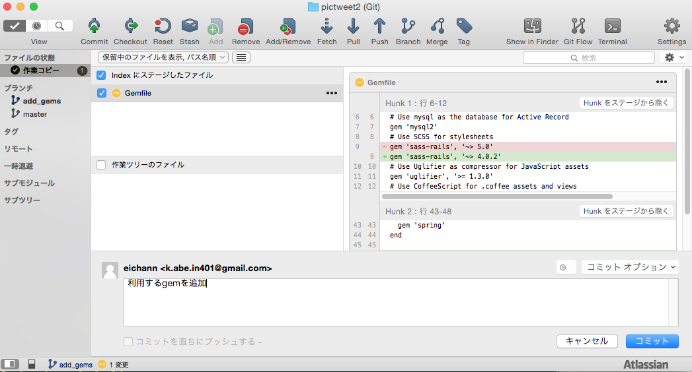
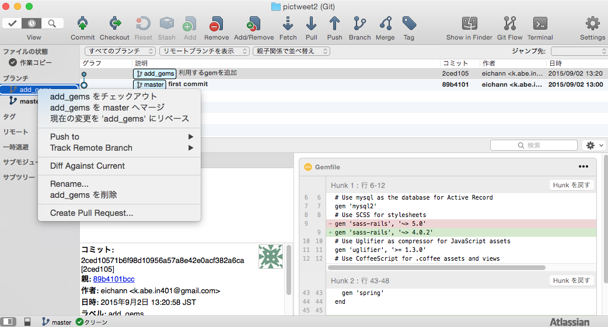
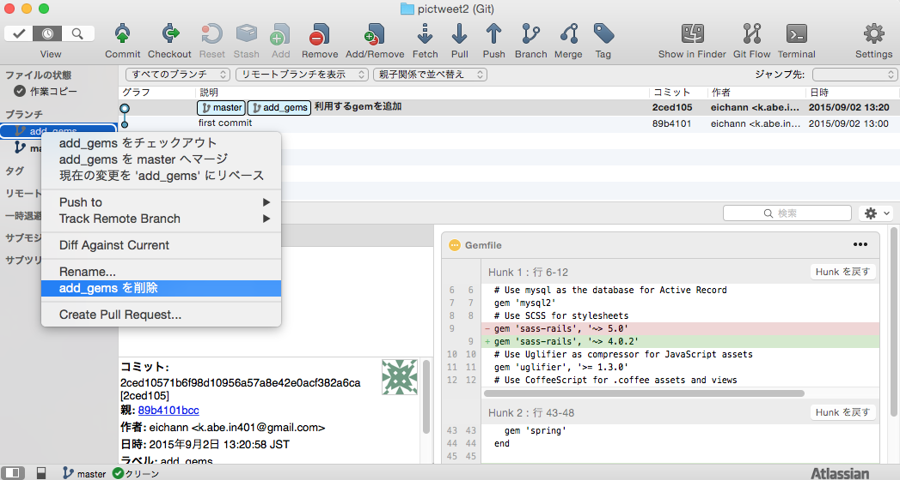
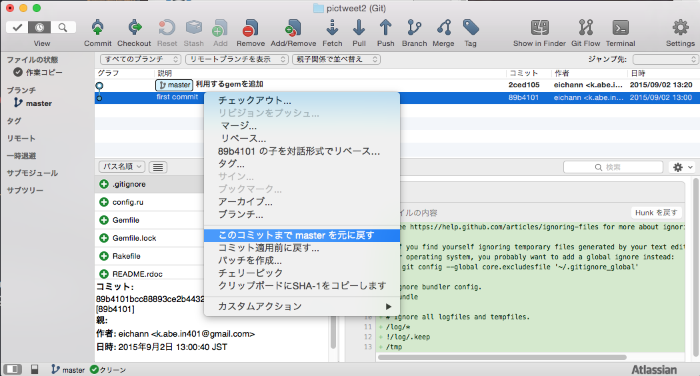
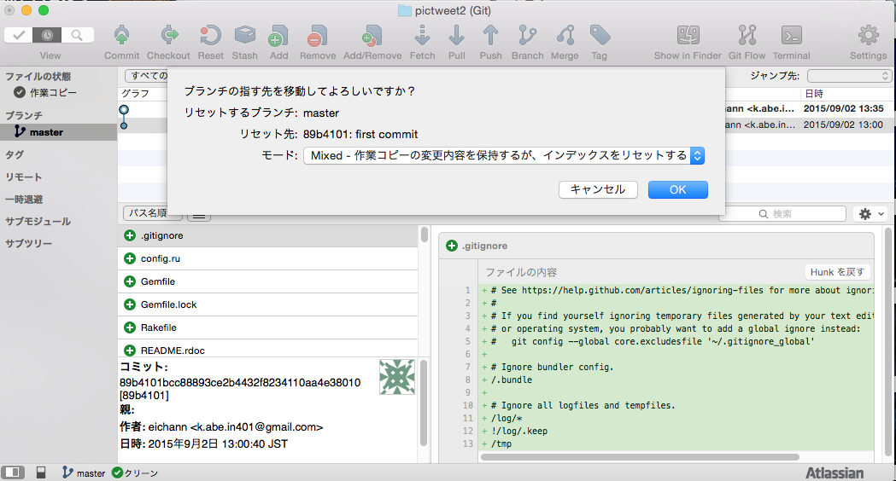

実際にGitを利用しながらアプリケーションを開発することで、Gitの利点を体感すると同時にGitの実践的利用法について学びましょう。
本章では復習も兼ねて、Lesson4で作成したPictweetをGitを利用しつつ再び作成していただきます。
まずはSourcetreeを利用し、アプリケーション本体のディレクトリに対するローカルリポジトリを作成します。アプリケーションに機能を付け加える場合は、masterブランチとは別に開発用ブランチを作成し、その上で開発するようにします。変更の差分を管理できるので、ひとつコードを書き進める度にコミットしていきましょう。コードをチェックし問題がなければ、masterブランチに開発用ブランチをマージすることで、変更分を適用します。
ブランチを作成する → 変更をコミットする → masterブランチにマージするという手順を繰り返すことで、開発を進めていきます。
Lesson4で作成したPictweetをもう一度作成してみます。その際、前章で学習したGitを利用しつつ開発していきましょう。
アプリケーションの開発を始める際は、Railsが利用可能なRubyのバージョンを利用しているディレクトリにてrails newコマンドを利用します。
早速、新規アプリケーションをpictweet2という名前で作成しましょう。-dコマンドをつけて、mysqlでの開発に切り替えることを忘れないでください。
1 2 3 4 5 6 |
#projectsディレクトリまで移動
$ cd ~/projects/
#rails newコマンドでアプリケーションの雛形を作成
$rails new pictweet2 -d mysql
#cdコマンドで、pictweet2のディレクトリに移動
$cd pictweet2
|
pictweet2のディレクトリに移動できていれば、アプリケーションの雛形を作ることは成功です。
続いて、mysqlのエラーを回避するために一度Gemfileを書き換えます。
1 2 |
#7行目付近、mysql2の行を以下のように変更
gem 'mysql2', '0.3.18'
|
続いて、アプリケーションのデータベース(DB)を作成しましょう。
1 2 3 4 5 6 7 |
#pictweet2ディレクトリまで移動
$ cd ~/projects/pictweet2
# gemをインストール
$ bundle install
#rake db:createコマンドでデータベースを作成
$rake db:create
#エラーが出なければ作成成功
|
rake db:createコマンドを実行してもエラーが出なければDBは無事に作成できていますが、念のためサーバーを立ち上げてアプリケーションのトップページにアクセスできるか確認しましょう。
1 2 3 4 |
#pictweet2ディレクトリまで移動
$ cd ~/projects/pictweet2
#rails sコマンドでサーバーを立ち上げる
$ rails s
|
この後、ブラウザからlocalhost:3000にアクセスし、Railsのデフォルトのトップページが表示されれば成功です。

続いて、新規作成したアプリケーションの雛形を管理するためのローカルリポジトリを作成します。ローカルリポジトリは、SourceTreeを利用して作成できます。ローカルリポジトリを作成できたら、最初のコミットをしましょう。
SourceTreeを開いている状態でcommand + nキーを押し、上部バーにある「+ New Repository」ボタンを押します。「Create local repository」を選択し、以下のように入力したら「Create」を押します。

ローカルリポジトリを作成できたら、続いて現在のアプリケーションの中身をコミットします。
ローカルリポジトリを作成したので、アプリケーションのファイルに変更があった場合は差分を検知できるようになりました。検知した変更を記録していくことで、安全にアプリケーションの開発をすることができます。検知した変更を記録することを、コミットと言いました。
作成したローカルリポジトリを開くと、大量の作業コピーができています。これは、監視対象のファイルをコミットしていないためです。まずは全てのファイルをコミットします。
コミットメッセージは「first commit」などで良いでしょう。書き終えたら、「コミット」ボタンを押します。

以下のようにコミットメッセージが表示されれば成功です。

アプリケーションに機能を実装していく際は、ブランチを作成してその上で作業を進めるのが一般的です。ここでも、ブランチを作成して機能を実装していきましょう。
これから、Gemfileを編集する、という実装を行います。実際の開発で利用するGemを追加するためです。この実装のためのブランチを作成しましょう。
ブランチを作成するには、SourceTreeの上部メニューにある「Branch」というボタンを押します。詳しくは、前章を確認してください。
ブランチ名はadd_gemsにしましょう。Gemfileに利用するgemを追加するためのブランチだからです。
SourceTreeの左部メニューにあるブランチ欄に、add_gemsという名前が追加されていれば成功です。

ここでは、Gemfileへの変更をコミットしてみましょう。
まずは、Gemfileに今回利用するGemを追記します。追記するのは、Lesson4でPictweetを作成した時に利用したGemと同じものです。
下記ディレクトリにあるGemfileを、以下の指示にしたがって編集してください。
1 2 3 4 5 6 |
#9行目付近、sass-railsの横の数字を以下のように変更
gem 'sass-rails', '~> 4.0.2'
#末尾に以下を追記
gem 'pry-rails'
gem 'compass-rails','~> 2.0'
gem 'sprockets', '2.11.0'
|
※その後、必ずGemfileを保存してください。
すると、SourceTreeのPictweet2のローカルリポジトリにおいて作業コピー欄の中身が増えているはずです。こちらの変更をindexに移動し、コミットメッセージを書いてコミットしてみましょう。
コミットメッセージには「利用するgemを追加」などと書き、「コミット」ボタンを押しましょう。
SourceTreeからコミットができたでしょうか？

コミットができたら、こちらのブランチでの作業は終了です。エラーが出ていないことを確認して、ブランチをマージしましょう。作業用ブランチをmasterブランチにマージすることで、変更した内容をmasterブランチに適用することができます。
まずはSourceTree左部メニューの「ブランチ」欄にある「master」をダブルクリックし、ブランチをmasterに切り替えます。
続いて、add_gemsブランチ上で右クリックを押し、「add_gemsをmasterにマージする」という選択肢を押します。

すると、ブランチがマージされます。
マージされたブランチは必要ないので、削除してしまいましょう。
削除したいブランチ、今回の場合は「add_gems」ブランチを右クリックし、出てきた選択肢のうち「add_gems」を削除を選択します。

すると、ブランチが削除されます。
Gitを利用してコミットをしておけば、特定のコミットまでリポジトリの状態を戻すことができます。これにより、安全に実装を進めることができます。ここでは一度、Pictweet2のGemfileを編集する前の状態にリポジトリの状態を戻してみましょう。
SourceTreeにて、Pictweet2のリポジトリを開きます。左上にある時計のアイコンをクリックすると、コミット一覧が出てきます。
ここで、「その時点に戻りたいコミット」を選択し右クリックを押します。今回は、Gemfileを変更する前のコミットである「first commit」を選択しましょう。すると以下のような選択肢が出てくるので、「このコミットまで元に戻す」を選択します。

ここで更に「Soft」「Mixed」「Hard」という3つの選択肢が出てきます。ここでは、「mixed」を選択しましょう。

すると、リポジトリの状態が選択したコミットにおける状態まで戻り、ファイルには変更が加えられている状態になります。ここから再度ファイルを修正し、新たなコミットを作成することができます。
ここまで、Pictweetを再度開発する場合を考え、実際の開発におけるGitの利用方法を解説してきました。この後も、追加したい機能ごとにブランチを作成し、実装、ブランチのマージを繰り返していきます。
以下にPictweetを開発する際の機能の一覧を示します。ブランチを作成する際の参考にしてください。細かい作業に関してはLesson4を確認しつつ進めましょう。
Pictweet2を一通り実装し終えたら、続いて「Lesson5 もう一度Moooviを作成しよう」に取り組みましょう。
※すでに「Lesson5 もう一度Moooviを作成しよう」に取り組まれた方は、「応用編 Lesson1 Railsアプリケーション3」に進んでください。
お疲れ様でした！このカリキュラムの終わりに確認問題を解きましょう。
 大宅 誠人
大宅 誠人